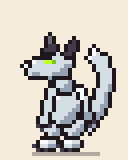
Olmlet
Pale little dragon · 12 colours
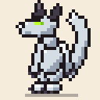
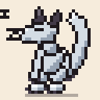
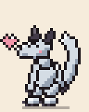
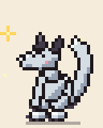
mrruth.com / matthew / pixel-pet-pals
A tiny pixel pet that reacts to what you're doing in Old School RuneScape. It chops when you chop, sleeps when you log out and throws a party for a level-up. It's free, open and embeddable on your site or stream.
Fan-made · Not affiliated with Jagex

Pale little dragon · 12 colours




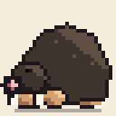
Star-nosed digger · 15 colours
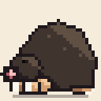
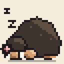
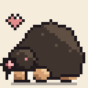
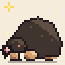
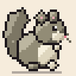
Fluffy and explosive · 4 colours
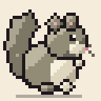
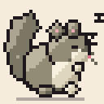
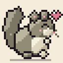
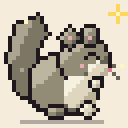
Pick a colour in the pet picker. Every colour has the full set of animations.
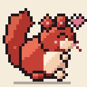
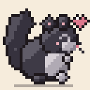
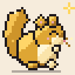
Shows your in-game name and what you're up to. It comes in two sizes: an overlay (360×120) for OBS and a compact card (240×80) for websites.